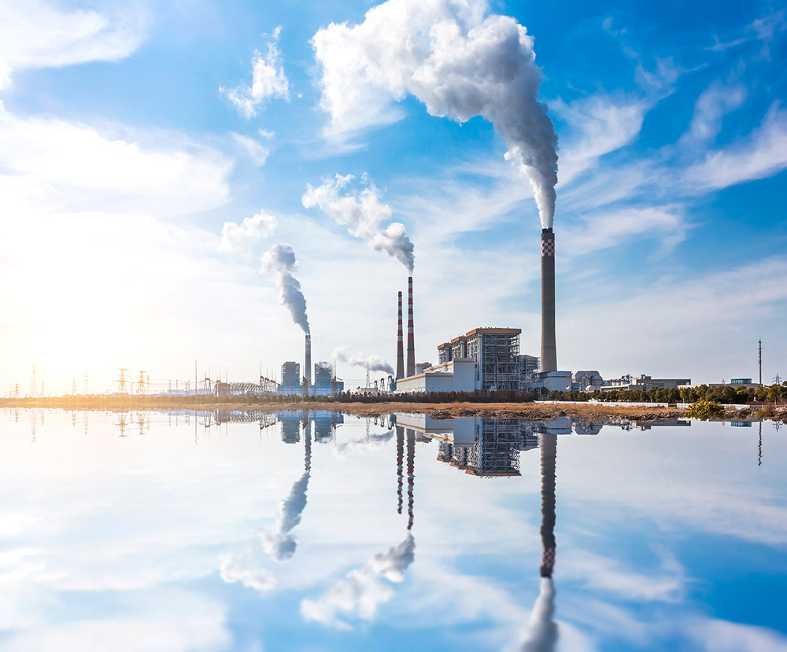
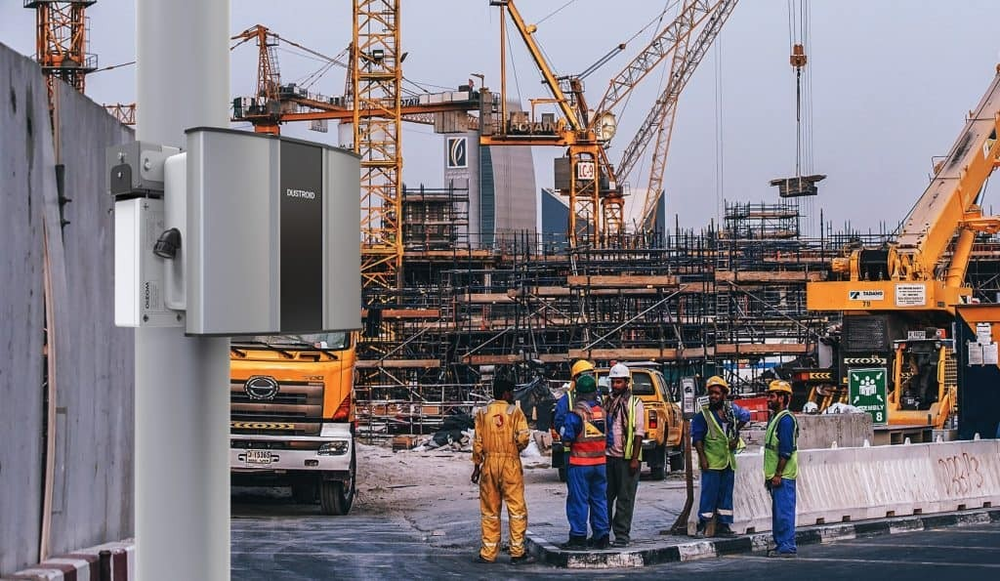

At AIPL, we provide state-of-the-art Continuous Emission Monitoring Systems (CEMS), ensuring that your operations are compliant with stringent environmental regulations and contribute to a sustainable future. Our sophisticated air pollution control solutions deliver precise, real-time emission data reporting, empowering you to manage and reduce emissions effectively. We are committed to helping industries safeguard the environment by offering innovative emission analysis tools that address the growing need for air quality management.

A continuous emission monitoring system (CEMS) is the total equipment necessary for the determination of a gas or particulate matter concentration or emission rate using pollutant analyzer measurements and a conversion equation, graph, or computer program to produce results in units of the applicable emission limitation or standard.
Our systems are equipped with high-precision sensors and analyzers.
We design and implement customized monitoring solutions that meet your specific requirements.
Our support extends beyond installation with ongoing maintenance, technical support, and training.
We provide high-quality monitoring solutions at competitive prices.
sustainable monitoring practices, supporting efforts to reduce carbon emissions.
Our systems are ideal for monitoring emissions from factories, refineries, and power plants, ensuring compliance with industrial regulations and standards..
Track and manage emissions from waste treatment and disposal facilities to minimize environmental impact and enhance operational efficiency.
Measure and control emissions from vehicles, ships, and aircraft, helping to reduce the carbon footprint of the transportation sector.
Monitor air quality impacts from farming and livestock operations, implementing measures to reduce emissions and improve sustainability.

Track dust and particulate emissions from construction sites, ensuring compliance with environmental regulations and protecting the health of workers and nearby communities.